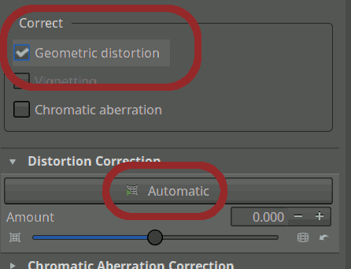
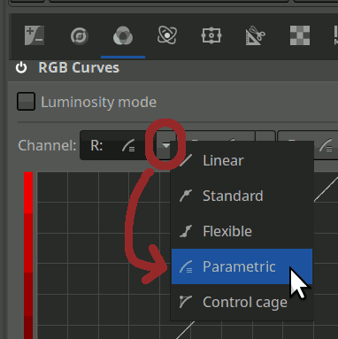
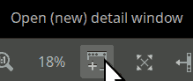

Description de comment je me dépatouille avec RawTherapee pour traiter mes photos. Aussi bien pour moi-même (pour plus tard, pour prendre du recul, ou pour découvrir des choses pendant la rédaction) que pour partager avec autrui – débutants ou non – ou récolter des avis et suggestions.
Aussi : Je sais qu’il existe moult vidéos et tout sur ça, mais des fois c’est un peu intimidant, les trucs faits par des pros qui possèdent dix boîtiers et cinquante objectifs et ont un hangar privatif avec tout un tas de lumières et que sais-je encore. Et je ne vous parle même pas des articles Wikipédia bourrés de termes chelous et de formules mathématiques qu’on a pas besoin de connaître pour s’amuser. Je me dis qu’un truc plus informel venant d’un quidam comme moi peut peut-être avoir son intérêt. Et puis, les vidéos, c’est pas toujours le top pour aller à son rythme, prendre des notes, retourner sur un point précis, etc. Ce qui ne m’empêchera pas d’en inclure des courtes, faites maison, sur des sujets précis.
1. Avant tout
1.1. RawTherapee
Logiciel gratuit, libre et multi-plateforme pour traiter les photos – aussi bien pour ajuster deux trois trucs sur des images qui sont déjà des JPG que (« surtout », on va dire) pour bosser sur ses raws et produire des « vraies » images à partir d’eux. C’est une alternative réputée à Lightroom (le truc payant d’Adobe qui marche main dans la main avec Photoshop).
1.2. Au fait
-
Je risque de donner surtout les noms de l’interface anglaise, car c’est ce que j’utilise, et ce qui est probablement plus facile à retrouver en ligne quand on cherche de l’aide. En plus, la traduction française, aussi bien côté logiciel que dans la documentation, est incomplète (je voulais d’ailleurs essayer d’y contribuer mais je procrastine et utilise le logiciel au lieu de participer à son développement parce que je suis un boulet).
-
Ceci a été pondu avec RawTherapee 5.11. Je doute qu’il y ait des changements trop radicaux dans l’avenir proche, mais bon, je préfère prévenir. D’ailleurs, 5.12 est sorti entre-temps. Pas encore testé.
-
J’ai vaguement songé à mettre, sur certaines sections, des indicateurs pour dire « oh là là, attention, cet outil est un peu plus technique et avancé » pour guider un peu et permettre aux gens de sauter ce pour quoi ils ne se sentaient pas très chauds, mais en fait :
-
Ma vision des outils est subjective.
-
La complexité d’utilisation n’est pas corrélée à l’utilité de chaque outil.
Donc il vaut peut-être mieux que vous fassiez le tour du propriétaire une ou deux fois et que vous vous fassiez votre propre avis.
-
1.3. Concepts
Je ne vais pas non plus réécrire la documentation officielle de RawTherapee ni redonner le contenu des 25 972 985 vidéos qui existent, mais il vaut quand même peut-être mieux que je donne deux ou trois clés de compréhension.
Si vous n’êtes pas trop familiers avec le concept de raw et tout, il vaudrait peut-être mieux passer par explications.html.
Pour le reste, la doc officielle est (pour le moment, mais je crois qu’ils aimeraient changer) là :
https://rawpedia.rawtherapee.com
1.3.1. pp3
Un élément important dans l’usage de RawTherapee : les fichiers « sidecar » (« accolés »).
Quand vous éditez une photo, un fichier reprenant son nom mais avec une extension .pp3 apparaît à côté de la photo.
Il contient les valeurs des paramètres appliqués et permet donc de conserver votre travail sans que la photo elle-même ne soit affectée.
Pratique pour tester plusieurs trucs différents, reprendre à zéro si besoin, faire des sauvegardes de secours de ses paramètres…
C’est aussi ainsi que RawTherapee peut vous replacer là où vous en étiez si jamais vous fermez l’éditeur.
.pp3, avec des paramètres de filtres de netteté [1][SharpenEdge]
Enabled=false
Passes=1
Strength=25
ThreeChannels=false
[SharpenMicro]
Enabled=false
Matrix=false
Strength=16
Contrast=35
Uniformity=5Un ensemble complet de paramètres tels qu’on les trouve dans un .pp3 est un profil de traitement.
Lorsque vous exportez votre photo dans un JPG final (ou un PNG ou autre), il vous est proposé via une case cochable d’enregistrer aussi les paramètres correspondants (Save processing parameters with image).
Ça pond un .out.pp3 à côté du JPG (ou autre, bref).
Je le fais systématiquement, et je fais même des sauvegardes de sécurité de tous mes .out.pp3 sur des périphériques de stockage externes.
C’est moins « périssable » que le .pp3 de base qui traîne à côté du raw, quoi – on risque moins de le modifier sans faire exprès.
Plus d’infos sur la documentation officielle (la page sur le sujet a été traduite) :
https://rawpedia.rawtherapee.com/Sidecar_Files_-_Processing_Profiles/fr
|
|
Les |
|
RawTherapee plante de moins en moins souvent au fil des versions, mais vous savez comment c’est, l’informatique… Bref, je fais régulièrement le raccourci clavier qui force l’enregistrement du sidecar (Ctrl+Shift+S), plutôt que de juste m’appuyer sur la capacité du logiciel à le mettre à jour quand il se ferme. |
1.3.2. Snapshots
Les snapshots sont des instantanées d’un état de votre boulot. Ça permet de revenir à des points précis, notamment si on a fait n’importe quoi, et de comparer plus facilement certains états. Il y a aussi un historique, mais il devient vite dodu vu qu’il répertorie un peu tout, alors que les snapshots, on les crée quand on veut et on peut leur donner des noms.
Je désigne, dans ce document, des moments idéals pour créer des snapshots, et indique des noms potentiels (genre je dis « Snapshot plop »), mais ce ne sont que des suggestions et chacun fait comme ça lui chante.
Moi-même, j’ai changé mes habitudes au fil du temps.
Globalement j’en fais beaucoup moins qu’avant – au début j’en pondais un à chaque outil activé, quasiment…
Un résumé de ces snapshots sera fourni en fin de document.
|
Ni l’historique ni les snapshots ne sont enregistrés dans les fichiers |
1.4. Mise en place
-
Redimensionnement volet des snapshots.
-
Déplacement histogramme (dans paramètres). Normalement, pas besoin de le redire à chaque fois, ça.

Je ne sais pas trop pourquoi, mais le bouton pour ouvrir les paramètres n’apparaît que si on a lancé RawTherapee « tout seul », genre pas pour ouvrir une photo précise. L’interface du logiciel a en effet plusieurs modes, plus ou moins minimalistes.
1.5. Navigation et manipulations
1.5.1. Se balader entre les champs
Si vous n’avez pas l’habitude d’utiliser la touche Tabulation (↹) pour naviguer d’un élément au suivant dans une interface (et même chose avec Shift (⇧) pour naviguer en sens inverse), il va falloir vous y mettre, sinon vous aller décéder.
Voir également https://fr.wikipedia.org/wiki/Focus_(informatique) si vous n’êtes pas familier avec la notion de focus.
1.5.2. Raccourcis
De la même manière, si vous êtes allergique aux raccourcis clavier, il y en a quand même un ou deux qui méritent d’être retenus dans RawTherapee pour ne pas perdre trop de temps. Fort heureusement, ils sont généralement rappelés quand on survole les boutons correspondants.
Ajouter un snapshot |
Alt+S |
|---|---|
Enregistrer le pp3 actuel |
Ctrl+Shift+S |
Exporter en JPG, etc. |
Ctrl+S |
Afficher ou masquer le volet de gauche |
L |
Afficher ou masquer le volet de droite |
Alt+L |
Foutre l’image à une taille qui rentre dans l’espace que vous avez |
F |
Foutre l’image au zoom 100 % |
Z |
Il y en a une chiée d’autres, mais perso j’en utilise pas tant que ça tout compte fait :
https://rawpedia.rawtherapee.com/Keyboard_Shortcuts
Notez aussi qu’un clic droit sur l’en-tête d’un outil replie automatiquement tous les autres outils de l’onglet courant tout en ouvrant (si pas déjà le cas) celui visé.
1.5.3. Changer les valeurs
Quand vous êtes dans un champ prévu pour taper une valeur numérique (soit la majeure partie des trucs qu’on va tripoter), quasiment à chaque fois, vous pouvez :
-
Légèrement augmenter ou baisser la valeur avec les touches directionnelles ↑ et ↓.
-
Plus brutalement augmenter ou baisser la valeur avec Page Up (⇞) et Page Down (⇟). [2]
Ça marche aussi quand le focus est sur un slider mais… les effets sont alors inversés ! Donc ça me saoule et, quand je tripatouille tout ça au clavier, je me concentre sur les champs numériques. Les sliders, c’est plutôt pour tripoter à la souris, quand on a pas besoin d’autant de finesse.
À propos de sliders et de finesse : Si on clique sur un slider en maintenant le bouton de la souris et qu’on s’abstient de déplacer le curseur pendant un bref instant, le slider devient plus épais et on peut alors déplacer sa poignée plus lentement.
1.5.4. Trucs informatiques classiques
Certaines techniques encore moins spécifiques à RawTherapee servent bien pour taper des valeurs plus vite, aussi, et surtout pour défoncer les valeurs précédentes. Désolé par avance si certains éléments de cette liste vous donnent l’impression que je vous prends pour un demeuré, mais mieux vaut prévenir que guérir :
- Suppr
-
Supprimer le caractère situé à droite du curseur ou toute la sélection.
- Ctrl+Backspace [3] / Ctrl+Suppr
-
Supprimer un mot entier à gauche / à droite du curseur.
- Maintenir Shift tout en utilisant les touches directionnelles de gauche et de droite
-
Définir une sélection de texte en l’étendant caractère par caractère.
- Shift+Début [4] / Shift+Fin
-
Étendre la sélection jusqu’au début ou à la fin de la ligne.
- Double ou triple clic
-
Sélectionner un mot, une ligne.
- Taper directement en ayant sélectionné du texte, sans même avoir fait Suppr ni rien avant
-
Remplacer le texte sélectionné par ce qu’on tape.
|
|
Sur RawTherapee 5.8, je faisais beaucoup Ctrl+A pour sélectionner l’intégralité du contenu d’un champ, mais dans les versions suivantes ça ne marche plus, en tout cas chez moi. Triste. J’ai ouvert un ticket de bug à ce sujet, d’ailleurs. Un mec a confirmé que ce n’était pas un changement volontaire. |
1.5.5. Et donc…
Une bonne partie du temps, les réglages se résument à :
-
Faire deux fois de suite Tabulation pour passer au champ numérique suivant en sautant par-dessus le slider.
-
Bourriner les touches fléchées du haut et du bas ou Page Up et Page Down pour changer les valeurs.
1.5.6. Trucs qui crament
En haut de l’interface se trouvent deux boutons en « ⚠ ». Ils permettent de mettre en évidence, respectivement,
-
les trucs tellement sombres que ça nique des informations sur leur couleur ;
-
les trucs tellement clairs que ça nique également des informations sur leur couleur.
Les pixels concernés apparaissent alors en blanc dans le premier cas, et en noir dans le second. Donc ça fait des bouses blanches dans les zones trop sombres et des bouses noires dans les zones trop claires. Difficile de les rater.
Ce sont de bons indicateurs quand on se laisse aller et qu’on pousse certains outils trop loin. En particulier, les trucs trop lumineux peuvent défoncer les yeux, mais quand on est en plein traitement, tête dans le guidon, des fois on ne se rend pas compte qu’on a abusé.
On dit communément des trucs trop clairs qu’ils sont « cramés ». Je ne sais pas s’il y a un équivalent pour les trucs trop sombres ; j’ai tendance à appeler ça « cramé » également par abus et facilité. Les anglophones disent que les ombres et lumières sont alors « clipped » (un terme somme toute assez générique pour quand une valeur numérique se heurte à une borne) ou « blown ».
|
|
Le zoom affecte l’affichage des zones cramées. Des fois on croit que tout va bien mais c’est juste qu’on est loin et que le logiciel a la flemme de nous montrer des trucs, ou qu’il ne calcule pas le résultat avec autant de précision, ou je ne sais quoi. Enfin bon, quand c’est vraiment l’hécatombe, il nous le fait savoir, normalement. |
En plus de ces indicateurs, on peut garder un œil sur l’histogramme : si les « montagnes » s’écrabouillent comme des merdes contre le bord gauche ou droit, et en particulier si de petits indicateurs carrés s’affichent dans les coins supérieurs, c’est qu’on est en train de trucider nos couleurs :
1.5.7. Curseurs
Certaines fonctionnalités changent le curseur pour effectuer des opérations particulières, comme recadrer la photo ou effectuer une rotation. La plupart ont aussi un raccourci clavier associé, comme C pour le recadrage. Ça peut perturber au début, surtout si vous activez ça sans faire exprès.
La touche H (comme « Hand ») remet le curseur « normal » : la main à la con qui permet de faire glisser l’image.
Vous pouvez retrouver les types de curseurs en haut de l’écran, changer à loisir, et obtenir les raccourcis clavier en survolant les boutons :
2. Étapes
2.1. Initialisation
-
Je charge mes valeurs par défaut à la main car j’ai la flemme d’essayer de configurer un truc automatique et je préfère savoir où j’en suis et ce qu’il se passe. On verra dans Se faire un profil de trucs par défaut comment pondre un fichier de trucs par défaut (ou autres) qu’on peut charger à loisir plus tard. Vous pouvez faire sans, c’est juste que certains trucs me saoulent car les valeurs suggérées de base sont farfelues pour mon usage, donc je fous les miennes à la place.
-
Au début je le foutais uniquement pour les photos sombres, mais en fait on est jamais vraiment à l’abri de pixels qui fument la moquette, et les effets indésirables sont quasi nuls si on met une valeur pas trop agressive genre 125… voire le maximum, si ça fait le taf.
Même quand on met un ou deux mois de son salaire dans un appareil, des bouts du capteur finissent par fumer la moquette… -
Snapshot
init.
2.2. Transformations
-
Distortion si objectif relou et si la suggestion initiale automatique n’est pas top.
-
C’est un peu obscur, ce truc. Il y a à la fois une case cochable () pour demander une rectification automatique, basée sur le profil de l’objectif…
-
… mais aussi un bouton () qui met une valeur automatiquement (dans le Amount sous ledit bouton) pour essayer de mieux coller au JPG inclus par l’appareil dans le raw.
-
Avec mon vieil appareil, je gardais la case cochée et je cliquais sur le bouton qui remplit le champ tout seul. Puis, éventuellement, j’ajustais un peu.
-
Avec le nouvel appareil, peut-être parce que l’objectif distord DE OUF, ça a tendance à faire nawak. J’ai l’impression que ça essaye de corriger des trucs que l’appareil a déjà corrigés. Bref, je DÉCOCHE la case (qui semble parfois faire plus de mal que de bien avec cet appareil) et je choisis une valeur manuellement. Ça me faisait grave chier au début mais finalement une fois qu’on a pris le coup de main ça se fait bien, et ça aide à choisir l’effet qu’on veut donner (un peu de distorsion n’est pas forcément un tort).
-
Autrement dit, vous allez peut-être devoir expérimenter un peu et trouver la stratégie qui va le mieux. En cas de doute, le réglage manuel vous assure une absence de surprise, on va dire… Vous pouvez aussi vous en foutre car l’œil s’habitue assez vite à des trucs tordus, mais bon, après ça ressemble à des vidéos de skateboard quoi, des fois.
Je crois que la version 5.12 améliore ça, mais j’ai pas encore testé.
-
-
Le reste de cet onglet peut servir à ce moment aussi si on veut, mais ne presse généralement pas. À moins que vous n’ayez prévu un recadrage ou une rotation vraiment radicale, je considère qu’il vaut mieux garder ça pour la fin, car notre façon de faire ça sera peut-être affectée par le rendu presque-final de l’image (on peut vouloir finalement garder dans le cadre un truc qu’orn trouvait initialement moche, et inversement). Enfin bon c’est comme vous voulez, vous pouvez aussi faire un premier jet de recadrage (voir Recadrage (Crop)) et de rotation et de perspective à ce stade et ajuster plus tard.
-
Snapshot
transfosi changé quelque chose.
2.3. Pré-courbe
J’appelle ça « pré-courbe » parce que c’est une poignée de trucs que je fais avant de m’embêter à tripatouiller une courbe, dont on parlera plus loin – et parce que la courbe en question sera un assez gros morceau. Globalement, mes trucs « pré-courbe » concernent la luminosité et compagnie.
Le gros de cette partie a lieu dans l’onglet Exposure, avec quelques petites escales.
2.3.1. Petite base
-
Exposure compensation en faisant surtout gaffe aux trucs qui crament (regarder la tronche de l’histogramme, aussi). Pas trop stresser si ça rend moche les parties sombres.
-
Highlight compression si trucs encore cramés qui auraient demandé trop de sacrifices niveau Exposure compensation. Pas abuser sur ça non plus car il y a d’autres moyens de rectifier ça après. Je dépasse rarement 30 et presque jamais 50. Peut-être que j’ai tort, mais perso je trouve que ça fait trop de la bouillie terne, après.
-
Black, je sais pas trop pourquoi ça autorise des valeurs à cinq chiffres ; perso je suis généralement dans -1000–1000, mais faut pas trop se mettre spécialement de limite je pense. L’intérêt peut être :
-
Sauver les trucs sombres qui ont fait… l’inverse de cramer, quoi. Les bouts qui sont devenus plus noirs que noirs.
-
Ou au contraire encore plus sacrifier les zones sombres si on veut créer une espèce d’intensité dramatique, je sais pas.
-
Ou juste mieux rentabiliser la plage de luminosité, si tout est trop lumineux et rien vraiment noir.
-
|
|
Ne pas oublier l’histogramme au profit de la tronche de la photo et inversement. |
Avant de m’attaquer au trio Lightness, Contrast, Saturation, situé juste avant la courbe, je me barre un peu ailleurs.
2.3.2. Balance des blancs
White balance, côté onglet Color.
La page RawPedia peut éclairer sur ce sujet, mais elle est un peu technique et dodue. Tout n’est pas vital à mon niveau je pense. Côté Wikipédia, j’en parle même pas… Vous aurez peut-être plus de chance sur YouTube, et pas seulement avec des trucs spécifiques à RawTherapee.
-
Corriger la température et la teinte de manière empirique, « à l’œil », par rapport à ce qui est suggéré en auto par l’appareil, à la rigueur.
Je ne vous mets même pas le lien Wikipédia de la température car ça parle de « mired ou mégakelvin inverse » et de « radiateur de Planck » et ça me casse les couilles comme pas permis. En gros, « gros nombres = chaud = rouge, sinon froid et bleu ».
-
Des fois l’appareil a vu suffisamment juste et on peut se foutre de la balance.
-
Souvent je ne touche qu’à la température, et encore. La teinte c’est violent, souvent, et plus dur à gérer.
-
Pas toucher le Blue/Red equalizer à moins que vous ne soyez sous l’eau ou un truc vraiment perché du genre.
-
J’ai peut-être trop boudé le Pick pendant un temps. Si, dans la photo, il y a un truc dont vous savez qu’il est censé être blanc (ou gris, mais alors, un vrai gris, pas un truc dégueulasse qui tire en douce vers le bleu ou que sais-je encore – faites gaffe, c’est assez courant ces conneries), vous pouvez le prendre comme référence pour que ça ponde des valeurs en fonction de ça. Un genre de calibration-étalonnage, quoi.
Utilisez H pour remettre le curseur normal à la place de la pipette à couleurs (voir la section Curseurs pour les détails).
-
L’idée est vraiment d’être agnostique vis à vis du type d’éclairage : idéalement, un objet blanc devra apparaître blanc après réglage de la balance, même si il est sous une lampe orangée dégueulasse. De ce fait, le mieux quand on fait une session photo importante est d’y inclure une photo dédiée à la balance des blancs, dans les mêmes conditions d’éclairage, sur laquelle on fout une feuille de papier ou une connerie comme ça, qu’on peut ensuite viser avec le color picker de RawTherapee pour obtenir les valeurs adéquates de balance des blancs.
|
Ne pas tenter des trucs artistiques avec la balance des blancs, yo ; c’est pas fait pour et ça risquerait de biaiser plein de trucs genre la définition des couleurs de peau et tout. Il faut qu’à ce stade le rendu soit assez naturel, pas qu’on se mange un filtre sépia à la TikTok ou que sais-je encore. Il y aura tout un tas de trucs plus tard, dans Couleurs, pour se taper des délires de ce genre. |
2.3.3. Noir et blanc ou couleurs
|
|
Il vaut mieux décider tôt si vous voulez du noir et blanc ou de la couleur, car ce choix influe sur un milliard de trucs. Mais en même temps, il vaut mieux avoir déjà réglé deux trois trucs vraiment basiques pour faire un choix plus éclairé. Je pense que cette étape-ci est un bon compromis, mais chacun se fera son avis… |
Il y a plusieurs approches, la plus explicite étant probablement l’outil . Changer la Method peut être une bonne idée – l’impact est souvent plus grand que ce à quoi on pourrait s’attendre, et celle par défaut n’est pas forcément ouf je trouve, souvent.
|
|
Vous pouvez aussi faire des trucs genre baisser la saturation au maximum, entre autres bidouilles, mais bon, vu qu’il y a un outil dédié au noir et blanc, pratique et souple… |
2.3.4. Les extrêmes, rapidos
J’active Shadows/Highlights sous la courbe, dans l’onglet Exposure. Ça permet de récupérer plein d’infos de couleur dans les parties cramées ou trop sombres. Si vous n’avez rien à récupérer, vous pouvez faire sans, mais c’est aussi sympa pour se donner un peu plus de latitude pour la suite, dans les extrêmes.
Les quatre premiers trucs se règlent assez bien en gigotant à la souris :
-
Les deux tonal widths, c’est genre « à quel point l’outil doit se focaliser sur les extrêmes ou peut déborder et s’attaquer à des trucs pas tant abusés que ça ».
-
Les sliders Highlights et Shadows, à leurs côtés, c’est la bourrinité.
Le dernier (Radius), c’est plus sournois et il vaut mieux zoomer un peu sur un point « important » de la photo pour le régler. Je sors rarement de 30–50 et je garde souvent 40.
|
Il n’est pas rare que j’ai des valeurs de Highlights et Shadows riquiqui (parfois même 1 voire 0), surtout si la photo a été prise dans de bonnes conditions. C’est plutôt bon signe, hein. Faut pas croire que c’est mal de peu s’appuyer sur certains outils… |
2.3.5. Compression supplémentaire éventuelle et autres trucs gourmands
-
Si vous galérez encore trop avec des trucs trop lumineux ou trop sombres, vous pouvez foutre un peu de Dynamic Range compression, toujours dans l’onglet Exposure.
-
Pas forcément besoin de pousser sa force très loin ; je suis souvent sous 10.
-
Je n’ai jamais touché au slider Detail qui s’y trouve – impression que c’est un truc de niche à l’impact généralement négligeable.
-
L’Anchor permet de rectifier la luminosité ambiante si vous trouvez que la compression a tout foutu en l’air. Pratique aussi (avec modération) pour quelques ajustements de dernière minute.
-
-
Se calmer un peu sur la force de Shadows/Highlights si on a mis de la compression.
-
Pour les paysages qui font bleuté au loin, peut dépanner. Par contre, c’est vite violent, et ça assombrit un peu tout, pour ça que j’essaye de le faire tôt. On peut alors compenser avec les autres paramètres. Par contre, ça semble demander pas mal de calculs et ralentit l’aperçu, donc c’est super chiant de devoir activer cet outil si tôt…
2.3.6. Finir l’exposition de base
Là, on revient là où on en était dans l’exposition () : il nous restait :
-
la luminosité,
-
le contraste et
-
la saturation.
N’abusez pas trop sur le contraste et la saturation à ce stade :
-
Pour le contraste, il faut se garder un peu de marge pour plein d’outils qui exploitent ça pour mieux faire ressortir les objets et tout.
-
Il y aura encore plein de trucs dans l’onglet Colors (on en parle en section Couleurs) qui pourront faire des trucs similaires à la saturation en mieux, et même la chromaticité machin truc dans les ajustements finaux.
Bref, faites comme vous voulez, mais moi je suis généralement dans -2–2 pour ces deux-là, à la rigueur -3 ou 3 mais rarement. D’ailleurs, à propos de « comme vous voulez », ces paramètres pourraient être réglés plus tôt, en particulier la luminosité. Ça peut être pertinent quand un ajustement un peu extrême est nécessaire.
2.4. Courbe
Tone curve, dans (ouais il y a tout un volet qui porte le même nom que l’onglet, c’est pas ouf mais bon).
Je passe souvent beaucoup de temps sur ça. Si vous ne deviez toucher qu’à une seule chose, je pense que ça serait cette courbe :
-
✓ Ça a un effet sympa 99,9 % du temps, de peaufiner la courbe. La première fois, j’ai vraiment eu un « effet “wow” », genre on a d’un coup l’impression d’être un gros guedin.
-
✓ Ça permet de mettre l’accent sur ce qu’on juge important dans la photo, dans une certaine mesure.
-
✓ Certains utilisateurs font remarquer que, quand on maîtrise ça, certains sliders genre Black ou Contrast deviennent plus ou moins inutiles car on peut les émuler avec la courbe.
Mais c’est quoi cette courbe ? On peut la voir comme une fonction mathématique, appliquée indépendamment à chaque pixel. Le pixel y entre en disant quelle tronche il a, et il ressort potentiellement modifié. C’est un filtre, en somme – comme beaucoup d’ outils (tous les outils ?) de RawTherapee, mais là c’est plus flagrant car on a la fonction représentée graphiquement sous les yeux, et chaque pixel est traité indépendamment, sans être emmerdé par ce qui arrive à ses voisins.
C’est surtout en matière de luminosité, qu’il se passe des choses. En abscisse, on a la luminosité en entrée, et en ordonnée celle en sortie. Autrement dit :
-
La partie gauche du graphique concerne les zones plutôt sombres de la photo.
-
La partie droite concerne plutôt les trucs lumineux as fuck.
-
Plus un point de la courbe est haut, plus les parties de la photo qui correspondent à ce point (concernant leur tronche initiale, leur luminosité et tout) vont être lumineux en sortie, et inversement.
La courbe a généralement plus ou moins une forme de « S ». Plus ce « S » est infléchi, plus l’image apparaîtra contrastée, vu que ça défonce les sombres encore plus qu’ils ne le sont déjà, et booste les clairs. À l’inverse, une courbe linéaire (diagonale à la con) donne un truc tout fade.
|
|
Pour supprimer un point, on peut le prendre et le « balancer » hors du cadre, comme j’ai dû le faire à la fin de la vidéo ci-dessus car j’avais, je ne sais trop comment, ajouté un point en trop. |
Plus généralement :
-
Les endroits où la pente est raide sont plus contrastés, et donc généralement plus jolis et mis en valeur, à condition de ne pas abuser non plus sinon ça part en truc sous LSD.
-
À l’inverse, les endroits de la courbe qui sont un peu raplaplas présentent un « risque », car cela va faire se rapprocher le rendu de parties censées avoir des tons différents. J’appelle ça « de la boue » car des trucs censés être des dégradés deviennent des aplats dégueulasses.
Vous allez peut-être me dire « bah il faut monter comme un goret sans arrêt, alors, non ? Comme ça tout est joli ! », sauf que, bah, au bout d’un moment, on arrive au « plafond » et on est niqué, quoi. Dans ma tête, donc, en gros :
-
consentir, via du plat, à ce que des choses soient moches revient à « prendre de l’élan » ;
-
grimper de manière raide pour embellir quelque chose, c’est « griller des cartouches ».
Il faut donc faire de l’espèce de micro-management avec sa courbe, des concessions et tout. Certains paysages sont casse-burnes, genre, parce qu’il y a des choses intéressantes dans tous les tons, et on ne peut pas trop sacrifier quoi que ce soit car la « boue » se verrait trop.
|
La « boue » se voit beaucoup moins dans les extrêmes (sombre / clair), ce qui explique probablement pourquoi on se retrouve souvent avec un genre de « S » à la fin : plat aux extrémités, pentu au centre. Il reste cependant des exceptions, typiquement si une lampe ou le soleil figure sur la photo et est important – il peut s’avérer nécessaire de lui accorder un peu de pente malgré la violence de la lumière. À vous de voir. |
C’est là que l’histogramme visible en arrière-plan de la courbe intervient, pour nous aider à faire nos choix :
… Ou pas, car genre là, avec mes fleurs à la con, pour moi le truc important c’est les fleurs, plutôt dans le clair, et l’appareil était en mode « oh bah puisqu’il y avait une chiée de pixels sombres, ça devait être ça le sujet », et ça a donné une suggestion avec la « raideur » de la courbe surtout localisée sur ces tons-là. Bref : il peut y avoir des « montagnes » dans l’histogramme à cause de trucs dont on se contrebranle, donc il ne faut pas se sentir obligé non plus de foutre des pentes raides pile dessus.
Maintenant que les bases sont posées, on va pouvoir voir ces histoires un peu plus en détails.
2.4.1. Type
Ça détermine grosso modo comment la courbe est tracée en fonction des points, et donc comment elle réagit quand vous ajoutez ou déplacez des points.
Avant je foutais le type Control cage. Il est sympa mais fallait partir d’un truc linéaire et ça me saoulait un peu. Maintenant je garde le truc par défaut (Flexible), et je peaufine à ma sauce la courbe proposée de base. Vu que ça relève davantage d’une préférence au niveau des manipulations que d’un quelconque choix artistique, je pense que chacun a son favori et le fout quasi tout le temps.
2.4.2. Mode
Ça détermine (si je pige bien) comment la courbe, sa pente et tout, influe sur la luminosité et les couleurs de la photo. Le rendu, quoi, on va dire. Pas forcément besoin de piger les détails mathématiques tordus ; on peut tester divers modes et à force on choisit assez vite celui qui convient au style de la photo et à l’ambiance qu’on veut.
J’utilise personnellement trois modes :
- Standard
-
si pas grave que couleurs craquent un peu leur slip, rendu plus artistique / pop / whatever. Au début je le foutais partout, mais en fait c’est touchy car quand la courbe est pentue les couleurs deviennent encore plus abusées (surtout certains verts ou oranges ?) ; ça peut être frustrant. Les modes suivants ont moins ce souci.
- Perceptual
-
si préfère ultra-réaliste voire limite trop pépère. Peut quand même être rendu plus vénèr après avec contraste et couleurs boostés, via les autres outils.
- Film-like
-
pour un compromis entre les deux ci-dessus. Dans les faits, c’est celui que j’utilise le plus ces dernières années.
Le mode Film-like a été développé à la base par Adobe pour Lightroom et tout. Je crois que son nom vient du fait qu’il tente de se rapprocher de ce qu’on obtient avec de vraies pellicules photo.
2.4.3. Trifouiller les points de la courbe
Des conseils et astuces un peu en vrac, désolé.
-
Si vous aviez activé des outils gourmands en calculs (notamment Dynamic Range Compression et Haze Removal), je recommande de :
-
Les désactiver avant de bosser sur la courbe.
-
Gérer la courbe en essayant de ne pas trop se formaliser sur la luminosité ambiante moyenne globale et la tronche des zones très sombres ou très claires : on ne peut pas trop s’y fier vu qu’on a temporairement désactivé des trucs.
-
Une fois que vous êtes satisfait, réactiver les outils gourmands précédemment désactivés.
-
Éventuellement peaufiner la courbe, maintenant que le plus gros du travail est fait et que les délais d’actualisation de l’aperçu posent moins de problèmes. En particulier, la Dynamic Range Compression permet généralement de faire monter les points de la courbe dans la moité de droite du graphique, car ça calme la joie des parties grave lumineuses en nous donnant une bonne marge de manœuvre.
-
-
Garder Ctrl enfoncé pendant le glisser-déposer d’un point pour déplacer pépère. Par contre ça me nique les doigts, à force, mais bon.
-
On peut aussi passer en mode « édition de coordonnées » en faisant un clic droit sur un point, pour ensuite carrément taper des valeurs numériques. Je le faisais beaucoup au début, mais en fait c’est un peu chiant, même avec les techniques au clavier pour augmenter ou baisser les valeurs pas à pas. (Re-clic droit, hors points, pour sortir de ce mode.)
-
Ne pas abuser non plus sur le contraste dû aux inflexions et tout. Gardez en tête qu’il y a d’autres outils derrière qui vont faire ressortir les choses un peu plus nettement, etc. Avant, j’avais un peu trop tendance à vouloir « faire avec la courbe ce pour quoi des outils parmi les suivants sont prévus » : je faisais des espèces d’escaliers tarabiscotés et tout. Maintenant :
-
✓ je garde des trajectoires plutôt fluides (ça évite de se retrouver avec des artefacts bizarres, de la « boue » ou du « LSD »), et
-
✓ je conserve un peu de marge dans les extrêmes, au lieu de chercher à être vraiment à la limite du tolérable pour les ombres et la lumière pétante.
-
-
Plutôt que de mettre trop tôt des points pile au niveau des pics de l’histogramme (ou des endroits intéressants de manière générale), mieux vaut contrôler la pente à ces endroits, en mettant des points de part et d’autre de l’endroit crucial et laisser, dans un premier temps en tout cas, la hauteur simplement découler de ces points-là.
-
Comparer à l’original pour voir si la courbe par défaut présentait des avantages qu’on a perdus (typiquement un bout de l’image qu’on aurait amoché sans s’en être rendu compte). Tenter de trouver des compromis si c’est le cas.
-
Faire plusieurs itérations avec des snapshots genre
c0,c1,c2… Ça m’aide à vérifier que je vais dans la bonne direction, et que je ne perds rien d’intéressant en cours de route.
Ouais je commence à
c0car le premier essai est rarement suffisant et présente souvent des défauts criants quand on le compare à « avant de tripoter la courbe ».Je pousse aussi le délire jusqu’à faire des
c2.1,c2.2… au lieu dec3si je suis loin d’avoir bougé tous les points de la courbe que j’avais en snapshotc2. Déformation professionnelle de développeur, je pense. -
Ajouter des points intermédiaires au fil des itérations, genre à mi-chemin des points déjà posés. De préférence avec Ctrl enfoncé, pour que les points se mettent sur la courbe au lieu de charcuter cette dernière.
-
Il y a une fonctionnalité cool, activable avec un bouton à droite, pour :
-
voir où se situe un endroit de la photo par rapport à la courbe (et donc piger où on doit tripoter la courbe pour arranger un souci) ;
-
ajouter rapidos (avec Ctrl + clic) un point sur la courbe à l’emplacement approprié pour s’occuper de l’endroit en question de la photo.
-
2.5. Détails
Onglet Detail.
|
Une icône « 1:1 » dans l’en-tête d’un outil, comme pour beaucoup dans cet onglet, signifie qu’il vaut mieux être à un zoom d’au moins 100 % pour bien juger le résultat du réglage. Vous pouvez foutre une fenêtre de détails (voire plusieurs) à 100 % ou plus dans un coin et garder une vue d’ensemble à côté si vous voulez, à la limite. |
Grosso modo dans cet ordre :
2.5.1. Bruit
-
Noise Reduction mais gaffe car nique couleurs et détails. Genre si vous poussez trop ça transforme tout en espèces de flans. Surtout utile si la photo a été prise dans des conditions reloues, avec sensibilité ISO poussée loin ou longue exposition.
-
Zoomer à 200 voire 400 % pour bien voir s’il y a du bruit, et voir sa dégaine.
-
Le simple fait d’activer cet outil a un effet, sur le bruit un peu coloré. On a alors souvent l’impression que tout est soudainement devenu gris, voilé, d’où le fait qu’il vaut mieux garder ce filtre pour les photos qui en ont vraiment besoin.
-
Il reste ensuite généralement des aléas du côté de la luminosité, potentiellement trop « granuleuse ».
-
Régler la Luminance pour lisser autant qu’on veut.
-
Régler la Detail recovery pour redonner un peu de netteté aux petits objets et reliefs qui sont devenus tout moches.
-
Faire des allers-retours entre ces deux sliders si on veut peaufiner.
-
Éventuellement revenir au slider Gamma juste au-dessus pour cibler plutôt l’obscurité ou la lumière.
Du bouillon de lentilles qui devient du flan
À force, on « sait » quand on va en avoir besoin… Avec mon ancien appareil, je commençais à m’inquiéter à ISO 400, et fonçais activer cet outil à 800 ; avec le nouveau, c’est plutôt 6000 et 8000 respectivement, et encore. La différence m’avait mis sur le cul, mais heureusement qu’il résiste à ce niveau car mon objectif galère un peu pour récupérer de la lumière. Enfin bref, on s’en tape, de mes histoires.
-
-
Impulse Noise Reduction potentiellement, mais impression que c’est pas censé être utilisé souvent. Je l’ai quasiment abandonné depuis que je ne suis plus sur mon vieil appareil compact. Ça peut néanmoins être un bon complément au filtre anti-pixels chauds en cas de soucis techniques.
https://fr.wikipedia.org/wiki/Bruit_poivre_et_selÇa peut être une bonne idée de désactiver Noise Reduction le temps de régler la force de l’Impulse Noise Reduction, pour les gérer de manière indépendante. Pensez juste à le réactiver après…
-
Ça peut mériter un snapshot
noisesi on a fait des trucs significatifs. -
Pas de panique si vous avez l’impression d’avoir perdu en netteté et en contraste, genre si certains reliefs sont devenus un peu « mous » :
-
l’onglet Detail contient pas mal de choses qui permettent un peu de compenser ça ;
-
pour les petits changements de couleurs qui peuvent survenir (genre parce que des ombres un peu teintées ont été partiellement interprétées comme du bruit), ça peut faire peur à un gros niveau de zoom mais en vrai la vue d’ensemble est rarement très affectée, je trouve.
-
2.5.2. Sharpening + Microcontrast
-
Gaffe à pas accentuer le bruit : le fait d’accroître la netteté quand la photo est pleine de petits points à la con, ça rend les points encore plus visibles, et peut donner aussi un éclaircissement global non voulu, surtout avec la méthode RL Deconvolution de Sharpening.
-
D’ailleurs, j’ai tendance à préférer le Sharpening via Unsharp Mask.
-
Si même en méthode Unsharp Mask vous trouvez que ça fiche plus le bazar qu’autre chose, vous pouvez tester en cochant Sharpen only edges : ça se concentrera sur les contours des objets.
Le Sharpen only edges de Sharpening peut sembler redondant avec l’outil Edges, qu’on verra juste après, mais l’effet est différent voire complémentaire : le premier utilise des astuces basées sur une accentuation de contraste, tandis que le second redessine les contours, les rend plus tranchants.
-
Si l’outil Microcontrast ne semble pas pertinent, ce n’est pas forcément une hérésie de le laisser désactivé. Je l’utilise souvent pour les paysages, plantes, etc., mais rarement pour les figurines, par exemple, qui n’ont guère besoin d’accentuation de détails minuscules vu que c’est plutôt lisse.
-
-
Je ne change pas trop trop les paramètres en général. Je baisse fréquemment d’un pouième l’Amount du Sharpening, mais bon.
2.5.3. Edges
Si vraiment truc qui s’y prête bien, mais gaffe ça peut être violent. Pratique pour tout ce qui est un peu géométrique, très délimité, ou genre mes figurines à la con.
2.5.4. Defringe
Sert pas souvent mais des fois sauve la vie de ouf.
C’est pour les espèces d’auras à la con – des franges – qui peuvent apparaître, typiquement au bord des branchages en contre-jour.
(Histoire de longueurs d’ondes à la con.)
https://rawpedia.rawtherapee.com/Defringe/fr
Je suis parfois obligé de tripoter la courbe pour mieux coller à la couleur de mes soucis à moi, et pour limiter les faux positifs… Ça peut mériter d’enregistrer la courbe résultante dans un fichier, si une teinte donnée de frange revient fréquemment dans vos photos.
Il vaut parfois mieux accepter de n’enlever qu’une partie du souci plutôt que de chercher à tout éradiquer, car vous risquez de défoncer les couleurs de bouts qui n’ont rien demandé.
|
Ne pas confondre ces franges avec les aberrations chromatiques plus génériques.
Ces dernières, généralement bleues et rouges – le bleu étant du côté opposé au rouge – et plus prononcées dans les régions périphériques de l’image, correspondent à d’autres outils, notamment . |
2.5.5. Contrast by Detail Levels
-
Généralement dans -0,75–1,9 pour chaque niveau, et encore.
-
Adapter le niveau de zoom au niveau de détails visé, sinon on voit rien ou bien c’est pas représentatif :
-
je fous limite 200 % de zoom au début, pour les niveaux les plus fins,
-
et moins de 100 % pour les trois niveaux les plus dodus.
-
-
Si vous en avez rien à foutre, vous pouvez utiliser les gros boutons à la con qui font un escalier automatique :
-
En général je donne à chaque niveau une valeur relativement proche de celle des niveaux voisins (genre je ne passe pas de -0,8 à 1,5 entre les niveaux 0 et 1, quoi), mais je ne pense pas qu’il faille en faire une maladie non plus.
-
Des valeurs inférieures à 1 sur les niveaux de détails 0 et 1 peuvent servir d’ersatz de filtre anti-bruit, mais à n’utiliser que si vous n’avez pas de petits reliefs importants. J’en abuse sur mes photos de figurines, tout en regardant par exemple si ça ne brouille pas trop leurs yeux.
-
J’ai jamais touché au Threshold (seuil) de ma vie, je crois. Vous savez, le truc sous les différents niveaux, là. Peut-être que je suis con, mais je ne vois pas trop l’intérêt.
2.5.6. Local contrast
Ils craquent sur les valeurs par défaut, je trouve. En particulier le Radius et l’Amount.
Je règle ça de plus en plus à l’arrache (c’est-à-dire à la souris en gigotant avec les sliders), en zieutant le résultat.
-
Zoomer sur un truc qu’on veut rendre grave beau.
-
Jouer avec le Radius puis l’Amount.
-
Dézoomer un peu voire carrément (je fais souvent F à ce moment – voir Raccourcis).
-
Ajuster les niveaux, éventuellement en regardant ce qui crame (voir Trucs qui crament). Il y a souvent un niveau à partir duquel la quantité de pixels cramés passe assez soudainement d’« acceptable » à « abusée », et il faut trouver ça un peu au feeling. Ne pas oublier pour autant l’aspect esthétique : pas obligé de pousser au max partout !
2.6. Couleurs
2.6.1. Balance encore
Affiner la balance des blancs maintenant qu’on y voit peut-être un peu plus clair, mais n’abusez pas non plus sous peine d’invalider ce que vous avez foutu sur la courbe et tout. (→ Balance des blancs)
2.6.2. Vibrance
-
Protéger peau (Protect skin-tones) si et seulement s’il y en a (et si pas envie de couleurs artistiques cheloues).
-
Commencer par foutre 100 en saturé et 0 en pastel, puis faire varier le pallier pour voir où on veut placer la barre qui délimite les notions de « saturé » et de « pastel ».
-
Une fois le seuil placé, remettre les deux sliders à zéro.
-
Régler saturé et pastel un à un et éventuellement faire des allers-retours car ils changent l’un et l’autre la perception qu’on a de l’autre.
|
|
C’est pas forcément un crime de mettre des valeurs négatives. Peut-être que les rétines du public vous remercieront. |
2.6.3. Soft Light
Pas grand-chose à dire à part que je fous souvent une valeur de 1 ou 2… Ouais, je sais, c’est un peu ridicule…
2.6.4. RGB Curves
-
Sympa pour faire se détacher un sujet d’un fond, je trouve, notamment.
-
En paramétrique sinon trop prise de tête, trop violent :
Image 5. Passer les trois courbes en « paramétrique » (pour le rouge, le vert et le bleu – ici le rouge, par exemple)C’est relou de changer le type des trois courbes de couleurs à chaque fois, donc mieux vaut mettre ça dans un profil de trucs par défaut, même si dans ledit profil l’outil est désactivé.
-
Pas hésiter à « normaliser », genre si on a foutu -5 au sombre dans toutes les couleurs, c’est un peu con, souvent, et on peut les remonter un peu voire refoutre les trois à 0 pour le sombre : si on baisse ou monte tout pareil, la couleur ne va pas changer, quoi, donc autant calmer sa joie.
-
Je commence généralement par le vert, car c’est souvent celui sur lequel je me laisse le plus aller.
2.6.5. Color toning
J’hésite parfois beaucoup au niveau de cet outil, donc je fais un snapshot pre-toning avant de l’activer.
Au début, il faut choisir (ou non) de faire tendre les couleurs de traviole.
-
Tourner autour dans les quatre carrés du centre pour voir s’il y a une direction qui semble pas trop délirante, puis voir quel éloignement va le mieux.
-
Le point est souvent (pour moi en tout cas) suuuuuper proche du centre, voire au centre. Pas se forcer à mettre autre chose que le centre si on le sent pas.
Après, dessous, il y a quelques valeurs qu’on peut tripoter :
-
La Saturation présente ici donne souvent un truc plus sympa que celle qu’on a croisée tout au début dans , mais est biaisé selon l’endroit où vous avez placé le point sur la grille colorée.
-
Faire Offset avant de s’intéresser à Slope et à Power est une bonne idée, je trouve. (Comme le nom l’indique, ça semble décaler la luminosité de plus ou moins tous les pixels.)
-
Slope affecte surtout les zones claires, Power les sombres.
|
Ça permet d’ajuster des trucs qui éclatent un peu trop la rétine dans les zones claires, etc. Ça peut aussi servir d’ajustements plus fins que les L*a*b* Adjustments (qu’on verra un peu plus tard). |
Il est possible de mettre plusieurs « couches » de Color Toning, chacune avec ses propres paramètres, et de les faire s’appliquer uniquement à certains pixels de la photo (et plus ou moins fortement) en fonction de conditions sur leur teinte, leur luminosité, etc. (la partie Mask, dessous). Je ne vais pas me lancer dans des explications sur ça, mais c’est assez puissant. Je vous encourage à chercher des vidéos sur le sujet à l’occasion.
Il y a aussi d’autres « méthodes » proposées que le Color correction regions que j’utilise (liste déroulante en haut de l’outil), mais elles me font flipper. Jamais touché à ça.
2.7. Transformations pour de bon
2.7.1. Recadrage (Crop)
Ils ont tendance à foutre par défaut le Lock ratio qui garde les proportions d’origine. Perso j’avoue que je m’en cogne souvent, des proportions d’origine. Du moment qu’on ÉTIRE PAS la photo comme le font les journalistes à la con avec des images d’archive…
|
Pour les guides de recadrage, j’utilise généralement la règle des tiers, ou la moyenne harmonique machin truc pour les sujets « dynamiques ». Je me tape aussi parfois des trips avec les trucs à base de triangles mais c’est quand même assez ésotérique. |
|
|
Le Select change le curseur pour passer en mode recadrage. Vous pouvez aussi passer dans ce mode avec C, et en sortir avec H. Voir la section Curseurs pour des détails. |
2.7.2. Rotation
Soit vous foutez des degrés, soit vous tracez une ligne (que vous souhaiteriez) horizontale ou verticale pour initialiser le truc.
2.8. Selective Editing
Pas trop la motivation de disserter sur ça, mais en gros vous pouvez poser des ellipses ou des rectangles où vous voulez et appliquer certains filtres sur ce qui s’y trouve. Typique pour embellir les yeux.
Ça s’appelait initialement Local Adjustments.
D’ailleurs la page de documentation porte encore ce nom, et le lien que je m’apprête à vous donner risque donc de péter du jour au lendemain :
https://rawpedia.rawtherapee.com/Local_Adjustments
Snapshot select si utilisé.
Parfois un snapshot par zone ajoutée (select head) ou par thème (select eyes).
|
Les zones placées peuvent se retrouver complètement à l’ouest si, après les avoir placées, vous effectuez certains changements dans l’onglet Transform ! (Rotation, perspective, distorsion…) |
2.9. Spot Removal
Dans Detail.
Planquer un truc en copiant un rond sur un autre.
Il y a un « mode édition » à activer et à désactiver avec le bouton que j’utilise, à la fin. En mode édition, certaines transformations géométriques (toutes ?) sont désactivées, car (je suppose) ce traitement a lieu avant elles. L’avantage est que, contrairement à ce qu’on vient de voir pour le Selective Editing, vos réglages dans cet outil-là ne sont pas flingués à la moindre rotation faite par la suite.
Snapshot spot si utilisé.
2.10. Vignette Filter + Graduated Filter + L*a*b* Adjustments
Tout un peu voisin, dans l’onglet Exposure.
Ordre vaguement important à mes yeux, mais bon :
-
Vignette Filter, longtemps ignoré mais pas si mal. On pourrait se dire « mais à quoi ça sert d’assombrir le tour de l’image ? C’est complètement con ! », mais bizarrement ça donne souvent un effet grave stylé. Peut-être parce que ça dit au cerveau « hey, oublie ce qui traîne sur le côté, concentre-toi sur le milieu, abruti ! », je sais pas. Ça peut aussi calmer la joie d’éventuels trucs éblouissants dans les coins.
Par contre je trouve qu’ils craquent sur les valeurs par défaut et je les divise souvent par quatre, voire par six ou sept. La force négative (pour éclaircir) me sert beaucoup moins ; ça fait genre truc jovial ou rêveur, des fois.
-
Graduated Filter, même style, mais plus un truc de niche peut-être. Ça fait un genre de dégradé à partir d’un point dans une direction donnée. Sympa si le sujet est excentré et qu’il n’y a rien de très intéressant dans le coin opposé – il s’agit pour moi là encore d’orienter subtilement l’attention des gens.
-
L*a*b* Adjustments, nom barbare et maths wtf, mais à la limite on s’en branle des détails. Ça aide à corriger quelques trucs en fin de traitement (genre « putain j’ai vraiment abusé sur le contraste, en fait » car on se laisse vite emporter dans nos délires) sans invalider tous les paramètres de la Terre et flinguer la courbe sur laquelle on a passé trois heures. En plus, le Chromaticity présent ici est super cool et souvent préférable à des tripotages de la saturation (celle dans ).
Je fais ça après les deux Filters ci-dessus car si on met du vignettage ET un dégradé à la con, on se retrouve vite avec une image qui paraît globalement plus sombre (même si le centre n’a pas vraiment été affecté), ce qui peut mériter un petit boost ici.
On verra aussi tout à l’heure que je m’en sers beaucoup pour contrebalancer certains effets du Tone Mapping, ce qui me fait d’ailleurs me demander s’il n’y a pas un souci dans ma façon d’utiliser le Tone Mapping, mais tant que le résultat est là…
-
Snapshot
vign + grad + adj(si tous activés ; sinon ça peut n’être queadjquoi).
2.11. Tone Mapping
On reste dans l’onglet Exposure.
2.11.1. Sorte d’avertissement
J’ai une love-and-hate relationship avec cet outil. D’un côté il fait des trucs assez magiques et je suis dégoûté de m’en être passé pendant des années, d’un autre côté c’est une plaie pour trouver les bonnes valeurs, et il m’arrive de passer plus de temps sur cet outil que sur tous les autres rassemblés – sans exagérer. Mais bon, il faut dire que j’ai toujours peur de m’arrêter sur un truc potentiellement sous-optimal, hein ; une personne normalement constituée s’en sortirait probablement mieux.
Oh et en plus de ça :
-
Cet outil demande trois tonnes de calculs à l’ordi, ce qui rend l’aperçu très peu réactif. D’où le fait que le le garde pour la fin.
-
On ne peut pas trop se fier à l’aperçu pour cet outil, à moins d’avoir au moins 100 % de zoom. Autant pour certains outils, même parmi ceux qui portent la marque « 1:1 » dans leur en-tête, on peut se faire une idée du résultat même de loin, autant là c’est vraiment n’importe quoi.
Il existe des techniques bizarres pour remédier à cela, mais je n’ai jamais eu la motivation de les tester, rien qu’en voyant la tronche des explications. Mais rien ne vous empêche d’essayer – je suis probablement juste con, sur ce point.
-
Ça ralentit aussi de ouf l’export final en JPG / PNG / etc., donc ça rend les essais longs et laborieux.
-
Je sais pas si c’est moi qui utilise mal ce truc, mais je suis presque toujours obligé de retourner triturer les L*a*b* Adjustments (voire aussi les sliders du Color Toning) pour rectifier la luminosité et le contraste après avoir activé le Tone Mapping – parfois de manière assez marquée. Au début cet aspect me rebutait, mais j’ai fini par dire « qu’il en soit ainsi » et je fais avec, car ça en vaut souvent la peine.
2.11.2. Kézako
Mais ça fait quoi, me diriez-vous ? Bah franchement, j’ai du mal à l’expliquer, à part que ça :
-
✓ rend les bords des choses plus visibles, plus nets, un peu comme pas mal d’outils de Detail, ou au contraire donne un côté « rêveur » si on met une force négative ;
-
✓ ramène du même coup, par je ne sais quelle sorcellerie, les lumières et ombres extrêmes dans les clous… tout en pétant davantage la rétine, bizarrement, si on ne compense pas côté L*a*b* Adjustments ?!
Bon, c’est pas trop trop violent sur mon exemple, mais dites-vous que là je suis à une force de 0,2 ! Ça va bien plus loin ! D’ailleurs, la force par défaut est genre de 0,5, alors que je dépasse rarement 0,2, moi.
|
Activer le Tone Mapping redonne souvent de la marge pour booster un peu la quantité de Local Contrast sans trop cramer les lumières et ombres extrêmes. Enfin j’sais pas trop, mais souvent ça me donne un bon résultat, après, si j’augmente la force du Local Contrast en cas de Tone Mapping. |
2.11.3. Paramètres
Ma compréhension un peu naïve des paramètres :
- Strength
-
Bourrinité. On en a déjà un peu parlé à l’instant.
- Gamma
-
S’attaquer plutôt au clair (> 1) ou au sombre (< 1). Vu que ça « calme la joie » de la cible, mettre une valeur élevée pour s’attaquer au clair va donner un résultat plus sombre qu’une valeur sous 1. Je suis très souvent dans 1,05–1,5, ma valeur par défaut perso étant 1,1. Mais je suppose que si les éléments qui méritent le plus d’être rendus plus beaux sont dans la pénombre, vous irez plutôt dans les petites valeurs.
J’ai l’impression que l’impact (éclaircissement ou assombrissement de l’image) est inversé si la force du Tone Mapping est négative – il faut le prendre en compte côté L*a*b* Adjustments.
- Edge stopping
-
À quel point on veut que les contours, bordures, contrastes et tout soient saillants. Mon intervalle de prédilection est 1,2–1,5.
- Scale
-
Si on veut rendre plus stylés des petits détails ou des gros trucs. L’impact n’est pas toujours flagrant, pour moi. La valeur par défaut officielle est 1, la mienne 1,9, et dans les faits je suis souvent dans 1,5–2,5 pour les figurines, et aux alentours de 1,45 pour le reste. Mais c’est vraiment le genre de truc sur lequel je ne prétendrai pas avoir la science infuse…
Par contre, l’avantage, c’est qu’on peut le fixer assez vite avec un zoom à 100 % (pour avoir un aperçu assez fiable) en se concentrant sur une partie « importante » de la photo, et après on y touche plus trop au fil des ajustements. Donc c’est pas forcément l’aspect le plus casse-couille de l’outil, tout bien considéré.
- Reweighting iterates
-
Plus les paramètres sont poussés loin, plus on risque d’avoir un résultat qui fume la moquette : des points blancs à gogo peuvent apparaître au milieu de zones sombres, ou bien on peut avoir un truc sous-optimal sans même s’en rendre compte. En fait, l’algorithme planqué derrière le Tone Mapping fonctionne par itérations successives, et il faut lui dire au bout de combien de « tours » on veut qu’il s’arrête. Autrement dit, le résultat est davantage digne de confiance si on met un grand nombre ici, mais ça augmente aussi drastiquement les besoins en puissance de calcul.
2.11.4. Ordres d’idée
Voici à la grosse louche ce que j’ai en tête pour chopper les bons paramètres plus vite, mais ça vaut ce que ça vaut, hein.
| Force | Itérations | Changement appliqué à Lightness et Contrast dans L*a*b* Adjustments |
|---|---|---|
0,02 |
1 |
-1 |
0,04 |
1 ou 2 |
-2 |
0,07 |
2 |
-3 |
0,1 |
2 |
-4 ou -5 |
0,2 |
3 |
-7 ? |
Notes :
-
Ces estimations sont d’autant plus moisies que l’ajustement adéquat dépend aussi probablement pas mal de l’Edge stopping, mais bon. Et comme vous le voyez, je ne m’aventure pas dans les forces négatives, ici. J’utilise ça trop rarement et j’ai du mal à le gérer. Et j’ai probablement assez raconté de conneries comme ça pour aujourd’hui.
-
Comme vous pouvez le voir, mes valeurs de force sont plutôt basses. Souvent, je n’aime pas le rendu avec les valeurs plus bourrines que ça. Il m’arrive même de foutre 0,01…
-
Ce n’est peut-être pas une idée géniale d’appliquer le même changement à la luminosité et au contraste, mais bon, rien n’empêche de les ajuster séparément, après, en comparant les JPG obtenus avec et sans Tone Mapping (on verra ça dans deux secondes). Il faut bien un point de départ…
2.11.5. Protocole à deux balles
Voici comment je procède (vous allez voir, c’est très « naïf », hein) :
-
Exporter (Ctrl+S, etc.) pour faire un JPG (ou ce que vous voulez, quoi : ce que vous visez pour votre résultat) sans Tone Mapping avant de s’y aventurer, avec un suffixe dans le nom genre
_nt(pour dire « no tone »). Chez moi ça donne genreG79A1386_edit_nt.JPG, mais à chacun ses conventions. -
Bien vérifier qu’on a un snapshot correspondant à cet état « sans Tone Mapping » au cas où on se rende compte que la photo est mieux sans (notamment parce qu’on risque fort de charcuter les L*a*b* Adjustments, et peut-être d’autres trucs, et que ça serait dommage de galérer pour retrouver l’état d’avant).
-
Faire un essai de paramétrage de Tone Mapping, compenser avec les L*a*b* Adjustments un peu au jugé si besoin, éventuellement ajouter du Local Contrast au passage pour la forme, etc.
-
Exporter le résultat, cette fois-ci sans le suffixe
_ntde tout à l’heure (genre pour moi,G79A1386_edit.JPG). -
Comparer les deux JPG, de préférence en faisant gauche-droite-gauche-droite plus ou moins frénétiquement, au clavier, dans une visionneuse d’images, pour que les deux photos s’affichent alternativement au même endroit et qu’on voit bien les changements éventuels nous sauter à la figure. Le « deux versions côte à côte », ça atteint vite ses limites, je trouve. D’ailleurs vous aurez peut-être remarqué que je n’ai pas du tout fait la pub du mode « comparaison avant et après » automatique de RawTherapee, que j’ai du mal à utiliser efficacement – je préfère faire des snapshots et alterner entre plusieurs d’entre eux.
-
Tant qu’on est pas content, ajuster les paramètres et retenter le coup.
-
Si au bout de quarante essais ça saoule et semble toujours moins bien que la version
_nt, peut-être abandonner l’idée du Tone Mapping pour cette photo, ou tenter avec une force négative (ou positive si vous étiez déjà sur du négatif).
J’ai parfois remarqué que la végétation pouvait devenir presque oppressante, avec le Tone Mapping, surtout si on pousse trop loin l’Edge stopping : chaque feuille se détache tant qu’elle semble nous sauter à la figure.
-
Supprimer la version
_ntet son.pp3pour éviter de trop polluer.
Résumé
Voici une liste minimaliste des snapshots mentionnés de près ou de loin dans les étapes ci-dessus. Tout n’est pas forcément présent pour chaque photo, et – je ne le dirai jamais assez – rien ne vous oblige à coller à ça. Je me disais juste que ça pouvait donner une autre lecture du présent document, et démystifier le tout. J’y mets aussi des liens vers les passages correspondants.
Général / Pour aller plus loin
Notes en vrac
-
Pour les trucs plutôt faciles à voir sans zoomer comme un porc, plutôt foutre la photo à une taille correspondant à celle qu’elle aura quand les gens la verront à la fin. Aussi faire gaffe à des trucs à la con genre la distance à laquelle se trouve l’écran de votre tronche et la luminosité de la pièce.
-
Gaffe à ne pas fixer trop longtemps un point précis comme un teubé en faisant un réglage : on a vite fait de rendre moches d’autres endroits sans s’en rendre compte. Vous pouvez ouvrir des fenêtres de détails pour examiner plusieurs trucs précis à la fois, d’ailleurs. Bouton vers le bas de l’interface :
 -
Puisqu’on peut supprimer des snapshots, ne pas hésiter à en créer à tire-l’arigot en cas de doute, quitte à faire le ménage de temps en temps.
-
Pour chercher une valeur numérique adéquate pour un paramètre donné, j’utilise parfois ce que j’appelle la technique de la dichotomie, inspirée de https://fr.wikipedia.org/wiki/Recherche_dichotomique :
-
Regarder ce que la valeur par défaut (supposons pour l’exemple qu’il s’agit de 0) donne comme résultat, visuellement.
-
Mettre une valeur exagérée – on va dire 20 – et regarder le nouveau résultat visuel.
-
Mettre une valeur située, autant que possible, au milieu des deux qu’on vient de tester. Ici, ça donnera (0 + 20) ÷ 2 = 10.
-
Voir si ce 10 nous semble produire un effet trop fort ou trop faible.
-
Si l’effet est trop fort, la zone de recherche devient 0–10, et on refait le coup de « tester le milieu » donc 5, et ainsi de suite jusqu’à converger vers une valeur « idéale ».
-
Si l’effet était trop faible, même chose mais en partant au-dessus, dans 10–20, en testant ensuite 15.
-
Le but est de tester un nombre logarithmique de valeurs différentes plutôt que linéaire, et donc de gagner du temps. Ça permet aussi d’observer des changements plus « nets » entre les valeurs, alors que passer tous les nombres en revue dans l’ordre nous expose au risque de ne pas voir qu’on part trop loin (façon fable de la grenouille ébouillantée).
-
-
Après avoir fini de régler un outil, faire des désactivations-réactivations pour prendre du recul et vérifier qu’on ne s’est pas laissé emporter et qu’on a pas abusé de ouf. Ou au contraire pour voir si on aurait pu faire davantage. Vous voyez le genre. Surtout pour certains trucs genre Local Contrast.
-
Pour tester la compatibilité de RawTherapee avec les raws d’un appareil avant d’acheter l’appareil en question, vous pouvez utiliser les exemples disponibles sur la base de données https://raw.pixls.us/#repo. Voir aussi la discussion présente ici :
https://discuss.pixls.us/t/supported-camera-list/12402
CLI
Un aspect qui me plaît beaucoup avec RawTherapee est la possibilité de le lancer en ligne de commande (sans ouvrir l’interface graphique, quoi) pour appliquer des paramètres de traitement à un raw et produire une image, en sortie, dans le format de son choix.
Ça pourra sembler anecdotique à certains, mais le fait de me dire que, au besoin, je peux pondre un script (Bash, Python ou autre) capable de réappliquer tous mes .pp3 à mes raw et me re-fabriquer des JPG ou PNG aux dimensions que je veux, c’est rassurant (et ça évite de se sentir obligé de faire également une sauvegarde de secours des JPG ou PNG qu’on produit au fil de l’eau).
D’ailleurs, c’est ainsi que je produis les diaporamas qui sont sur mon site personnel : chaque raw du diaporama se voit appliquer son propre …_edit.JPG.out.pp3 ET un .pp3 commun qui se charge du redimensionnement et de quelques broutilles additionnelles comme ajouter un nom d’auteur.
On peut utiliser plusieurs fois l’option -p pour donner autant de profils qu’on veut.
La documentation de ce versant de RawTherapee laisse un peu à désirer mais a le mérite d’exister :
https://rawpedia.rawtherapee.com/Command-Line_Options#RawTherapee_CLI
|
Quand la documentation montre une valeur collée à une option (par exemple pour |
|
|
Sur certaines plateformes, la manière d’accéder à la version CLI de RawTherapee a un peu évolué au fil du temps : exécutable séparé, puis option |
Se faire un profil de trucs par défaut
Pendant que vous bossez sur n’importe quelle photo, vous pouvez enregistrer une copie du .pp3 correspondant à l’état courant, sous un nom arbitraire.
Vous pouvez aussi bien l’enregistrer avec tous les paramètres que juste avec certains de votre choix.
Ça permet ainsi de faire des « fragments » de profils réutilisables à volonté, pour avoir des valeurs par défaut ou gagner du temps pour des types de photos récurrents.
Pour le chargement de profils (avec le bouton juste à côté), même délire : avec Ctrl, vous pouvez choisir librement les paramètres à importer ou non.
|
|
Par paranoïa, je décoche toujours (pour ne pas appliquer une courbe hors sujet) et (un peu la même logique), même lorsque je sais que le profil ne contient pas ces paramètres-là. |
Il y a aussi toute une machinerie disponible pour charger automatiquement des profils à l’ouverture d’une photo, avec même potentiellement des conditions sur la sensibilité ISO et compagnie, mais j’avoue n’avoir jamais poussé l’exploration très loin de ce côté. J’aime bien garder un contrôle manuel sur certains trucs, des fois…
Mon profil de paramètres par défaut n’active pas tant d’outils que ça – presque rien, en fait, à part le filtre anti-pixels chauds. Il s’agit plutôt de mettre des valeurs « qui ont du sens » un peu partout, en préparation de mon passage manuel sur les outils, tout en laissant les outils en « désactivé ». C’est assez pratique, de pouvoir charger des choses comme ça sans activer tous les outils de la Terre.